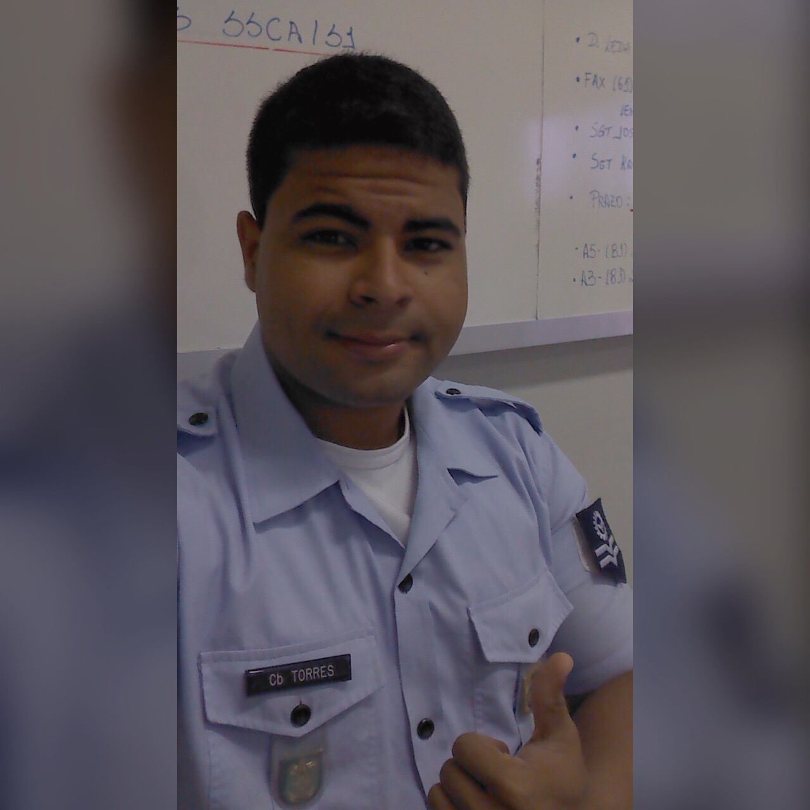

Heron Torres

Summary
Proactive, Technology Enthusiastic, Out of the box thinker, Multitasker,
Respectful and very calm under pressure. If i had to catch your attention,
these would be the best words to describe myself.
Education
- Bachelor - Industrial Engineering
- Faculdade Unime - Lauro de Freitas, Brazil (2013-2018)
- College Diploma - Business Administration
- Toronto School of Management - Toronto, ON (2019-2020)
Work Experience
- Corporal Administrative Assistant - Brazilian Air Force
Aug 2011 - Mar 2018
- Worked with executives to create annual budget and tracked actual expenses against projected expenses.
- Assisted in upper-level decision making by creating comprehensive financial reports and collaborating with finance and accounting departments.
- Delivered expert clerical support to diverse internal staff and management by efficiently handling wide range of routine and special requirements
- Performed general office duties, including answering multi-line phones, routing telephone calls or messages to appropriate staff and greeting visitors.
- Identified and recommended changes to existing processes to improve accuracy and efficiency.
- Increased data-entry productivity by maintaining detailed logs of data projects, identifying issues and improving them.
- Coached new employees on administrative procedures, company policies and performance standards.
- Produced high-quality documents, spreadsheets and presentations for internal and external needs using Word, Excel and Power Point.
- Effectively communicated with different departments, through use of strong listening, open ended questioning and appropriate response skills.
- Used Vehicles Administrator - Rallye Motors Auto Group
Jan 2020 - Sep 2021
- Responsible for the whole Used Vehicles processing, including receiving, reconditioning, advertising and delivering to the final consumer on 6 dealerships as well as all administrative procedures related.
- Also responsible for the execution of services on new vehicles sold on at least 3 dealerships.
- Finance Manager - Rallye Motors Auto Group
Sep 2021 - Nov 2021
- Created strategies to develop and expand existing customer sales, resulting in increase in annual sales.
- Analyzed potential risks and evaluated loan products to identify suitable options for customers.
- Explained very technical financial information to applicants in easy to understand language.
- Developed and maintained relationships with customers, lenders and other third parties.
- Processed loan applications and monitored progress from start to finish.
- Account Manager - Eblock Inc.
Nov 2021 - Jul 2022
- Drove team revenue totals by bringing in top sales numbers.
- Corresponded with online customers to address questions or complaints about products, policies, or shipping methods.
- Analyzed customer feedback to identify areas of improvement in online shopping experience.
- Responded to customer issues and resolved complaints by leveraging expert knowledge.
- Improved monthly sales with successful marketing, sales and customer relations approaches.
- Managed customer service inquiries and complaints for customer satisfaction.
- Business Development Manager - Rallye Motors Auto Group
Jul 2022 - Present
- Reached out to potential customers via telephone, email, and in-person inquiries.
- Generated new business with marketing initiatives and strategic plans.
- Identified and pursued valuable business opportunities to generate new company revenue and improve bottom line profit.
- Established key performance indicators to track and analyze business progress and adjust strategies accordingly.
- Taught consultative selling techniques to new and existing staff members to build expertise.
- Implemented systems and procedures to increase sales.
- Directed sales support staff in administrative tasks to help sales reps close deals.
- Collaborated with upper management to implement continuous improvements and exceed team goals.
- Recruited, interviewed and hired employees and implemented mentoring program to promote positive feedback and engagement.
Skills
- Implementation Experience
- Business Process Improvement
- Business Development
- Automotive Industry
- Customer Relationship Management
- Negotiation
- Key Metrics
Awards and Certifications
- Military of the Year 2016 & 2018
- Advanced Excel
- First Aid
- Verified International Academic Qualifications